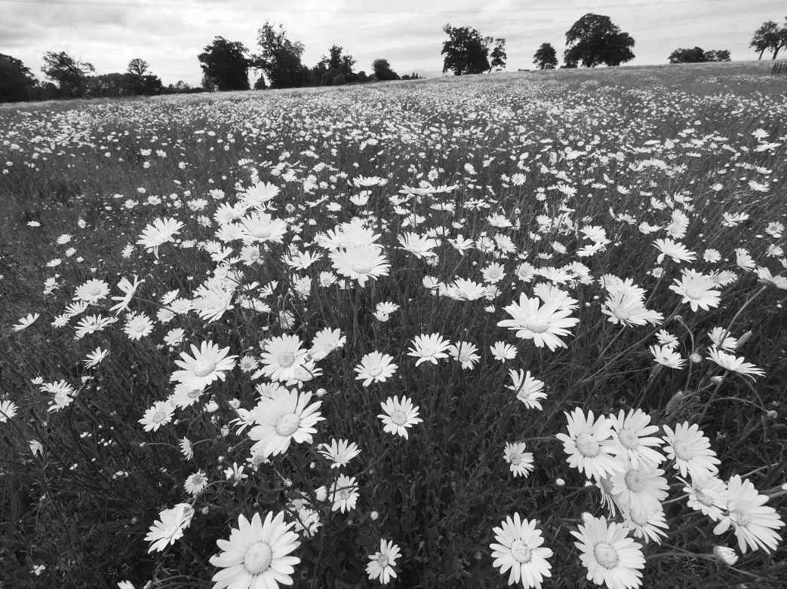
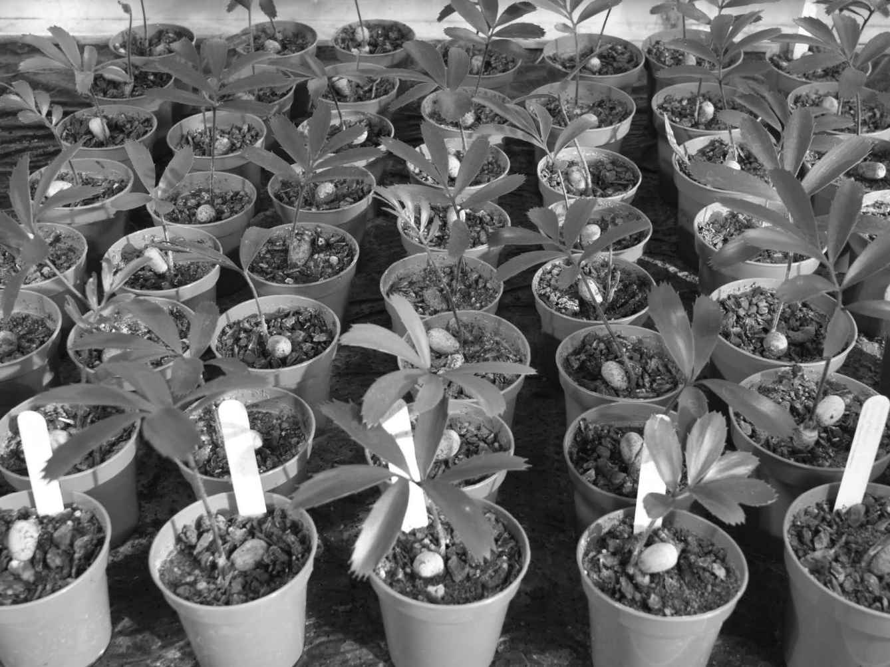
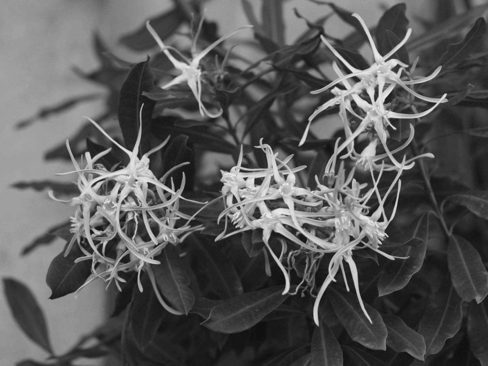
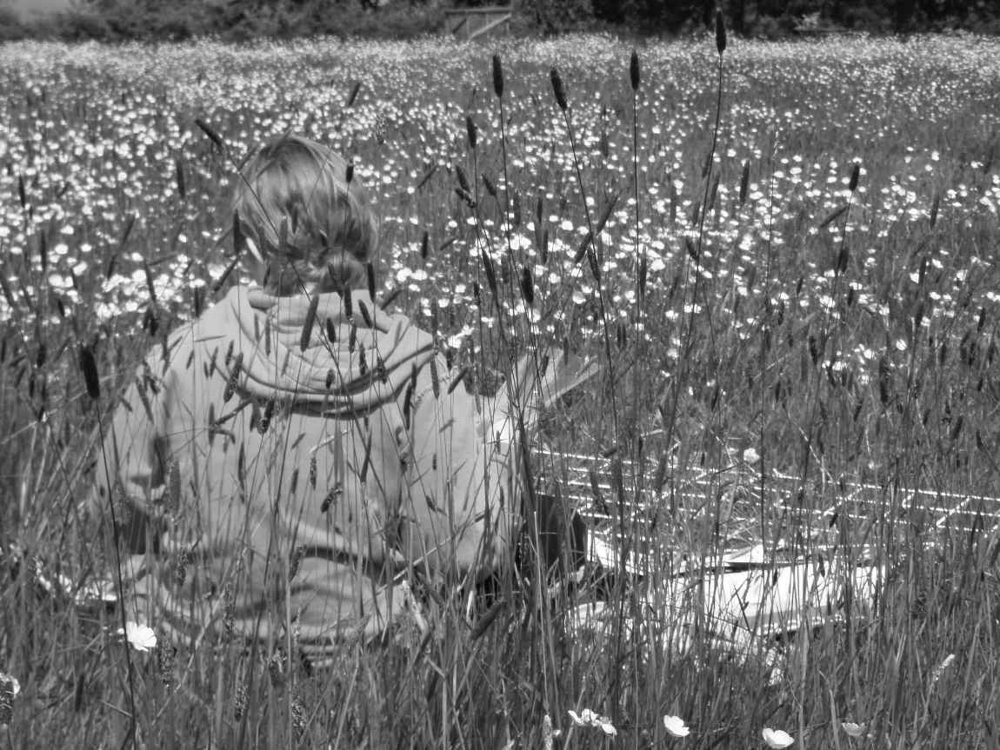

1992年6月5日，在巴西里约热内卢举行的第一次地球峰会上，《生物多样性公约》（CBD）正式启动。迄今为止，绝大多数国家都已经签署并批准了这份公约，它旨在保护生物多样性的组成部分，确保生物多样性的可持续利用，并促进利用获益的公平分享。作为这一里程碑式协议的结果，广义上来说的保护活动大量增加。每个国家都制订了行动计划，并承担起在本地区实施CBD的责任。这种情况的发生得到了这样一个事实的支持，即为保护而筹集的资金中有90%都花在了资金的来源国。其中一个例子就是英国皇家植物园邱园的千年种子库计划，该计划的首要目标是收集和安全储存几乎所有的约1 500种英国本土植物。除了实践活动的增加，标题中提及生物多样性的科学论文数量也发生了爆炸性的增长。
到20世纪末，许多植物学家（尤其是那些在世界各地植物园工作的植物学家）都清楚地认识到，尽管已经存在大量的活动，我们却没有办法知道CBD的愿望是否实现。在2000年4月的一次会议之后，参会者发表了《大加那利岛宣言》以呼吁《全球植物保护战略》（GSPC）的制定，并建议到2010年实现12个以上的目标。已批准CBD的国家对这一提议进行了讨论，并于2002年9月通过了GSPC，预计到2010年实现16个目标。这也许是一个惊喜，因为在此之前从未有人针对一类主要的生物种群提出以目标为导向的策略。其他保护组织对这一策略是否有效很感兴趣，因为这有可能成为未来所有保护工作的范例。到2010年，很显然其中一些目标已经实现，另一些目标将要落空但差距不会太大，还有一些目标将会严重落空。因此，人们在2010年起草了《全球植物保护战略2011—2020》。这显然是基于《全球植物保护战略2002—2010》的成败而设立的；与十年前相比，2010年的植物保护工作进展情况要好得多。
GSPC是一个极好的框架或者说是清单，如果我们要实现CBD中与植物有关的愿景，那么这项战略就列出了我们需要实现的目标。这16个目标涵盖了与植物保护有关的所有活动范畴。它令不同的组织能够做出与其资源和任务相称的贡献；人们认识到，无论是单个组织还是个人都不能使世界上所有的植物物种免于灭绝。为了了解遏制与扭转植物物种减少的任务规模，并认识到这并不是一个无法克服的难题，我们应当先了解GSPC的各个目标。
目标一是编制世界上所有已知植物物种的在线清单。这项工作是由英国皇家植物园邱园和密苏里植物园合作进行的，这两个植物园拥有世界上最全面的植物标本收藏。汇编这份清单所存在的问题是物种的分类存在两种方式。一种方式是根据对某个属中的所有物种（如果属很大的话也可以是某个属的一部分）进行调查的专著进行整理。这项工作通常是由对物种多样性具有全局观点的个人完成的。另一种分类方式就是根据植物群中的国家清查目录。虽然民族自豪感常常成为保护工作强有力的推动力，但众所周知的是，当地植物学家经常通过把小的变种提升到物种的等级来争取夸大所在国家的物种数量，而这些小的变种只是一个物种中正常的多样性变化范围。这种毫无恶意的沙文主义意味着你不能只是把植物群里的所有物种简单累加起来。你也不能仅仅把所有合法描述的物种都列出来，因为大多数物种都不止一次被命名，所以我们还要把同物异名整理出来。
作为创建世界植物群的第一阶段，编制世界清单的工作已经按照植物学分类层级中的科进行了整理，而其中也显示出了一些异常事物。无知的领域似乎毫无规律可循。小家族和大家族一样困难。无论是出于经济原因还是审美乐趣，那些有着悠久栽培历史的科并不比那些只是在最近才引起植物学关注的科更容易被人理解。因此，这项工作揭露出了缺乏专业知识的领域——这在欧洲被称为“分类学障碍”，而在澳大利亚被称为“分类学深渊”！
在整理好物种列表之后，我们需要知道哪些物种正在艰难生存，这就是目标二。在国际自然保护联盟（IUCN）的支持下，各个国家和地区都有汇集濒危物种“红色名录”的悠久传统。在许多国家，这份名录是根据国情而汇集的，但奇怪的是，这份数据也和植物群一样受到了夸大。更长的国家红色名录似乎被视为一种从资助机构撬动更多资金的方式。国家名录还导致在一个国家很常见但在邻国很罕见的物种似乎受到了威胁；误报是很常见的。
现有一份全球名录对所有分类群组中的47 677个物种进行了评估。目前（2009年）的这份名录显示，有17 291个物种（36%）将在未来的50年里面临灭绝的威胁。关于植物的统计数据则更加糟糕，在12 151个已评估的物种中，有71%的物种处于灭绝、野生灭绝、极危、濒危或是低危的状态，仅有12%的物种被列入略需关注 [5] 的等级分类。这些数据揭示了一个与数据收集有关的问题，那就是定义。国际自然保护联盟的分类具有明确的定义，并且成为黄金标准，但这需要大量的时间来进行编写，而我们可能没有这么多时间了。
显然，我们首先需要一种启发式方法。人们已经设计出这样一款名为RAMAS红色名录的评估系统，该系统将分类简化为三类：可能受到威胁、可能不受威胁以及可能缺乏数据。或者换句话说就是：受到威胁、没有问题或者不知道。这使得工作人员可以快速输入数据，而无需冗长的计算和全面的细节。除了为问题提供基础更为广泛的粗略估算之外，这款评估系统还将显示数据缺乏的位置，从而显示出哪里需要更多的资源。现在预计所有新的专题论文都将包括对所描述物种的濒危状态的评估。对于木兰和槭树等部分属，研究人员已经在全面的专题修订中对其进行了基于属的评估。目前也存在对于濒危物种数量的其他估计，其物种数量所占比例通常在22% ～ 47%之间。因此，我们有理由认为通常所说的36%的濒危比例不无道理，如果有352 828个开花植物物种，那么在未来的50年里将有127 018个物种面临灭绝的威胁。
我们已经很清楚工作人员正在完成大量的工作，如果只是要达到目标一和目标二，人们还需要完成更多的工作。保护生物学的各个领域都需要进行扎实的科学研究，而这些研究的实施与传播就是目标三。尽管同行评审的期刊终将占有一席之地，但同样真实的是，仍有大量的工作无人报道，而这些研究成果对保护工作者非常有帮助，尤其是那些以发展中国家为研究领域的保护工作者。自2002年以来，已涌现出若干基于网络的资源，基于证据的保护工作均可公布于此。保护项目中反复出现的一种经验就是，每个项目都略有不同。每个物种的恢复项目不尽相同，每个栖息地的恢复项目也有所不同，因为不同地点的物种集聚是不同的。虽然《生物多样性公约》颂扬并保护生物多样性，但正是这种多样性使概括变得困难、规则变得宽松。
因此，公约的前三个目标与了解和记载有关，没有这些，接下来的七个目标就无法实现。目标四是至少保护15%的世界主要生态地区。据估计，目前世界上有11.5%的陆地正受到某种形式的保护。在中国，这一比例是14.7%。保护生态地区的好处是可以保护上一章所提到的生态系统服务。此外，人们通常认为，如果某地具有健康、稳定、多样化的植物群落，那么动物、真菌和其他生物也会定居在此。正是由于这个原因，植物物种的多样性经常被用作所有生物多样性的替代指标。这不无道理，因为大多数生态系统都是通过占主导地位的植物而进行描述的。进一步说，保护大片地区不仅是在保护所记录的物种，也是在保护未知的生物。对于昆虫来说尤其如此，人类迄今可能只描述过10%的昆虫物种。但这对植物而言并不那么重要，因为人们认为有90%的植物物种至少被命名过一次。
虽然生态系统服务的保护具有不可否认的重要性，但同样不可否认的是，通常情况下植物的多样性，特别是个体物种的分布，在世界各地并不均匀。目标五将解决这一问题，即保护重要植物地区的75%。这里的目标是指尽量避免所有纬度和各种生境中的植物覆盖率出现差距。众所周知，通常而言，离赤道越远，单位面积上的植物种类数量就越少，但这并不意味着温带地区的重要性和价值就不如热带地区。人们还发现需要进行一些非常复杂的数据分析才能决定将保护区置于何处。马达加斯加的一项研究试图优化2 138种动植物的保护区分配。研究人员只获得了岛屿面积10%的保护许可，但每一组植物和动物需要的10%略有不同。在菲律宾，另一项研究表明，虽然许多植物在自然保护区得到了充分的保护，但受到威胁的棕榈树大多生长在这些地区之外。

图21 位于牛津郡的帕尔默牧场仅用了三年的时间就恢复为野花草地。自1950年以来，英国的此类草地中有96%都经过耕作
虽然保护“天然”植被地区总是被视为一个好主意，但我们不应忘记的是，地球上25%的土地正处于某种生产体制中。这并不一定是需要投入大量化肥、杀虫剂可能还有水资源的集约式农业系统。它可以是威尔士的山区农地，也可以是伊比利亚半岛的栓皮栎林地。后者是商业支持生产系统的极佳案例，这种生产系统所拥有的相关植物群可令该地区的植物多样性排在全世界的前20位。目标六的目的之一就是确保75%的生产土地是根据保护植物多样性的原则进行管理的。与种植者的田地相比，这个目标在林地更容易实现，然而在东安格利亚，人们经常看到石鸻在集约种植的甜菜地里筑巢。在世界范围内，多达60%的林地将生物多样性保护写入了该地区的管理目标。
所以这三个目标都与以植被为基础的大规模保护有关。然而，许多保护工作都是在物种层面进行的，尤其是因为如果人们捍卫并保护某一物种，那么他们就能看到自己产生影响。以物种为基础的保护工作有缺乏协调的风险，被选中的物种不一定是最需要保护的物种，而可能是最具代表性的物种。例如，资助兰花的保护工作要比资助某种藓类植物的保护工作容易得多。也就是说，大量的保护工作是在物种层面进行的。
多年来，我们的最终目标是对所有物种进行就地保护，如果物种在其栖息地的数量正在减少，那么我们就会进行更多种植以重新引入这一物种。这种做法的失败率远远高于成功率，因为如果物种衰退的威胁或原因没有得到消除，那么这些新植物将与它们的先辈走向同样的结局。唯一可以轻易消除的威胁就是人类的过度采集。这令人们开始考虑迁地保护，即植物在栖息地以外进行生长，例如植物园或者树木园等。结果就是，保护工作两极分化成两个阵营，《全球植物保护战略》的目标七和目标八就能反映出这种分歧。目标七是使75%的受威胁物种得到就地保护，而目标八则是对75%的受威胁物种进行迁地保护，其中10%应保存在物种的起源国。
数量正在衰减的物种理应被保存在受管理的自然保护区。这种方法的优点是，植物与真菌、传粉者、扩散媒介以及其他植物之间的所有其他关系能够得以维持。此外，人们普遍认为原位种群中保存有更多的遗传多样性，物种因而能够在适应环境变化的过程中发生进化。这一切可能都是事实，但是植物对于传粉者发生改变的耐受性可能要比我们之前想象的更强，很少有植物会利用扩散媒介，而维持植物种群遗传多样性所需的植物数量也比你想象的要少得多。要保持某一个种群95%的遗传多样性，只需要50 ～ 500株无亲缘关系的植物就足够了。就地保护的主要缺点是场地的安全性。在过去，这通常被看作防止人类开发或者栖息地转变的保护。现在可以看到，自然保护区还有另外两种威胁可能更难控制。一种是以后会有越来越多的外来物种入侵，另一种就是气候变化。
气候正在发生变化，这是无可争辩的事实。智人是否是背后因素并因此能对其进行控制，在这里并不重要。世界上的植物以前也经历过气候变化，最近一次就是上个冰河时代末期的恶作剧。植物可能是通过迁移、适应以及利用迄今未开发的特性等一系列综合策略来应对气候变化的。这些策略的相对贡献可能因物种和栖息地的不同而不同。如果迁移十分重要，而我们知道许多植物确实在过去的300万年里做了长距离的迁移，那么城市和农业景观对自然栖息地的入侵可能会使迁移的机会化为泡影。在这一阶段改变人类景观规模的想法是不切实际的，但在静止的自然保护区中保护植物的政策同样存在问题。连接二者的廊道策略是经常提出的一种想法，景观保护也是这样，保护区的位置借此得到协调。
就地保护的所有优势相对而言都是迁地保护计划的劣势。然而，二者之间存在一种折中的物种恢复计划，其目标是在某处建立起物种的自繁殖种群。为了实现这一目标，人们需要能够提供植物所需要的一切。我们需要了解栖息地需求、传粉生物学、种子储存需求，还需要有人提供持续、无休止的监测以确保植物的生存。这一策略在西澳大利亚州得到了支持，那里正在实施很多先进的保护措施。通过这样的物种恢复计划，植物物种已从灭绝的边缘恢复过来。

图22 濒危植物锐刺非洲铁（Encephalartos ferox ）的迁地栽培幼苗
与就地保护相比，迁地保护一直被看作相对较差的一种保护方式，但种子库的出现可能标志着其时机已经成熟。虽然千年种子库计划的首要目标是英国的植物群，但它还有一个次要目标，那就是收集来自世界各地的25 000个物种。这一目标已经实现，而人们又设定下更加雄心勃勃的新目标。在未来气候如此未知的世界里，像千年种子库计划这样的种子库看起来是个好主意。所有批判，例如遗传侵蚀、活性丧失、在战争等随机事件面前的脆弱性，都可以通过合理的采集方案、研究和重复采集来解决。的确，我们在过去20年里对种子的了解在很大程度上是种子库兴起的结果。将来，种子库中储存的种子可能会用于促进植物在自然保护区之间的协助迁移。的确，不是所有的种子都适合脱水和冷冻。也许多达30%的物种都具有所谓的顽拗性种子，我们需要为这类种子找到替代措施。
种子银行并不是一个新概念。它们最初是作为主要农作物的栽培品种基因库而存在的，而世界范围内有许多主要农作物的种子库，例如小麦、水稻、玉米和蔬菜。这些农作物中有许多是一年生植物，因此非常适合储存，也符合《全球植物保护战略》目标九的目的，即主要农作物70%的遗传多样性得到保存和保护。有些农作物并不依靠种子繁殖，所以对于马铃薯和果树等农作物来说，种质圃则成了替代性的选择。在许多国家，业余的园艺家们正在维持早先品种的存活。这些品种可能具有我们将来需要的独特性状，以传授抗病或抗旱能力。
我们在本书中已经提到过外来入侵物种所造成的问题。这是造成生物多样性丧失的五大主要原因之一，这五大原因的首字母可缩写为HIPPO，即栖息地改变、入侵物种、污染、人口增长和过度开发。达尔文的进化论是指通过自然选择使那些更适应其生存环境的生物发生进化，但这一理论经常被错误地简短引述为“适者生存”，而实际上应该是“略胜者和幸运者生存”。达尔文在150年前观察到，世界上并不存在物种极其丰富且资源充分利用，以至于没有外来物种生存空间的地方。他以南非的开普敦为例，那里的物种密度可能比地球上其他任何地方都要高。
有些人担心，最适合在南非生长的生物实际上是在澳大利亚和欧洲进化而来的，反之亦然。外来植物能够胜过本地植物有多个可能的原因。一个是捕食者释放的概念。这是指植物离开在本土对其进行控制的食草动物、害虫和疾病，而在新住所中不受攻击的可能性。无论何种原因，由A国带到B国的植物成为入侵物种，从而对B国的植物群落造成不可逆的损害的概率为千分之一。这种概率或许不低，但有70 000种不同的植物目前正在英国的苗圃中降价出售。这些全功能的基因组对其他植物的潜在危害要远远大于经过基因改造以抵抗除草剂的玉米。
《全球植物保护战略2002—2010》的目标十是为100种最具破坏性的外来物种制定控制措施。这一目标已经实现，并在《全球植物保护战略2011—2020》中被修改为更加明确控制所有国家重要植物地区的外来物种，以及更加明确控制进一步的入侵。在控制外来物种时遇到的一个问题是预测哪些物种会成为入侵物种。物种无法入侵是有原因的：例如土壤的pH值不对、冬天太冷、夏天太干、传粉失败、传播失败等等。然而，不幸的是，对于潜在入侵者并没有行动方案；我们只能成为事后诸葛亮——这方面与经济学非常相似。唯一的控制措施就是预防。我们应该对外来物种关闭边境，就像已经发生在美国、澳大利亚和新西兰的状况一样。
《生物多样性公约》明确表示，我们正在非常贪婪地消耗光合作用的产物。《濒危物种国际贸易公约》（CITES）应该已经阻止了对衰退物种的开发，但目标十一中重申了没有任何植物物种应受到国际贸易的威胁。有时，我们很难知道人们正在交易哪种植物。当某种植物被制成一套遮光帘或是一种草药时，你该如何鉴别这一物种呢？答案可能就在眼前。物种DNA条形码的实践已经在动物中取得了成功。办法是找到一段在同一物种的不同成员之间区别非常少，但在物种之间区别很大的DNA。我们所要做的就是从选定的基因组区域中提取部分DNA并进行测序，将这段序列与数据库中的所有已知物种进行比对，然后就能找到该样品的名称或是被告知新物种的发现。这听起来像是科幻小说，但这几乎就是现实，应用于该领域的手持机器原型正在测试中。下一步就是要创建序列数据库。
虽然目标十一解决的是已濒危物种的保护工作，但目标十二最初旨在通过确保至少30%以植物为原料的产品来自以可持续方式管理的植物来源，以防止其他物种被添加到濒危物种名单上。修订后的目标十二则是，所有野生收获、以植物为原料的产品都必须具有可持续的来源。购买任何物品的任何人都可以为实现这一目标做出贡献。目前已有许多大规模计划令人们能够减少自己对世界生物资源的影响，例如有机食品和林业管理委员会（FSC）计划。与生物学的许多方面一样，《全球植物保护战略》的这一方面也存在灰色地带。在世界上有猩猩居住的地区，关于棕榈油生产的争议就是这样一个问题。剥夺某些人创造收入的能力是需要我们严肃对待的问题，不应轻率地采取行动。
与生物资源丧失相伴随的往往是地方性的本土知识。我们有一系列包含这类信息的惯用语，其中很少是赞美性质的。老妇人的故事或者民间传说就是其中两类。人们常常会发现，这种专业的民族植物学知识并没有被记录下来，因此，当社会被西方知识和西式生活的承诺所取代或吸引时，这些知识的处境就很危险了。如果没有民族植物学家的工作，人们可能永远也不会发现，长期被用作箭头毒物的羊角拗（Strophanthus ）的汁液中含有被广泛用于治疗心脏疾病的毒毛旋花甙。目标十三希望遏止由于疏忽大意而导致知识损失的无知，但是《全球植物保护战略2002—2010》无法实现之前的目标。
在这一点上，人们遇到了关于贫困和生物保护之间相互关系的长期争论。有些人认为扶贫永远比植物物种的存在更重要，而有人认为如果植物的未来有所需要，那么他们愿意看到饥饿；大家的观点各不相同。和以往一样，现实介于两者之间，许多经济学家现在意识到经济繁荣往往是由健康的生物多样性所支撑的。然而，要说穷人需要对生物的破坏负责，而富人全都关心生物发展，这是很不公平的。世界上植物物种受威胁最严重的地区与繁荣或贫穷无关。
最后三个目标太过开放，我们无法确定是否已经有所影响，但有一些不错的工作实例正在发挥作用。目标十四呼吁在可能的情况下把保护植物遗产的需要列入教育计划。植物不会自己发声，所以它们需要布道者为其说话。植物园、树木园和野生生物信托基金只是提供公共教育计划的三类组织，这些计划旨在强调保护植物及其栖息地的必要性。实现这一目标的另一个方法是将植物保护写入生物学课程的国家教育大纲，也许还要包括经济、地理等课程。

图23 羊角拗，可从其中提取毒毛旋花甙来治疗心脏病
世界各地的植物分布非常不均匀，因而为实现《全球植物保护战略》的目标而努力保护这些植物的人员分布也很不均匀。目标十五旨在纠正这种平衡并确保有足够的经过培训且资源充足的人员人数，以实现战略的各项目标。人们常说没有人会再研究植物学了。如果你的结论只是建立在英国大学课程名称 的基础上，那么你可能是对的。然而，如果你花时间阅读教学大纲，你会很快发现生物学、环境科学、动植物保护和地理学课程通常包括1960年代和1970年代植物学课程的所有要素。“植物学”这个词有着维多利亚时代牧师住宅和爱德华时代女性的虚假外表，令潜在的学生望而却步，而新课程没有这些特征。然而，植物学在某些国家正处于优势地位。巴西和埃塞俄比亚就是其中两个国家。十年前，培育埃塞俄比亚植物群的项目成员完全由外国人组成。现在这项工作则完全由埃塞俄比亚人进行。
在许多国家，千年种子库计划等项目的确在创建合作关系和建设植物保护能力方面非常有效。至关重要的是，参与到植物保护工作的各个方面以及《全球植物保护战略》中的人员正在以一种协调的方式工作。国际、区域、国家和地方各级的网络是必需的，并且正在根据最后一个目标中的建议而形成。一个新成立的网络将把致力于保护海洋岛屿植物的人们联系起来。这些生物瑰宝通常具有极强的特有分布，因此成了独特的植物群。它们经常面临着共同的威胁。外来物种的入侵在岛屿上尤其常见且具有破坏性。这些网络将国家组织、非政府组织、国际机构、当地人都汇集起来，同时还有业余植物学家和博物学家这些为许多成功的国家战略做出重要贡献的人群。

图24 许多植物园将培养下一代野外植物学家视为首要任务
没有哪个个人或组织能够独自解决物种衰退的问题。现在在《全球植物保护战略》的支持下，我们可以更清楚地看到植物保护工作在哪些方面已经取得了成功，以及下一轮工作必须集中在哪些方面。这项战略已经成为其他领域保护工作的蓝图。
我们现在可以有把握地说，就技术层面而言，人们没有任何理由不能使某个植物物种免于灭绝。在一些国家，《全球植物保护战略》的所有目标几乎都将达成。其中一个国家就是英国，在这里，400年的植物学历史以及实地考察和植物学记录传统表明，如果土著居民投入够多，那么植物和永远依赖植物获取一切的人类都将拥有美好的未来。